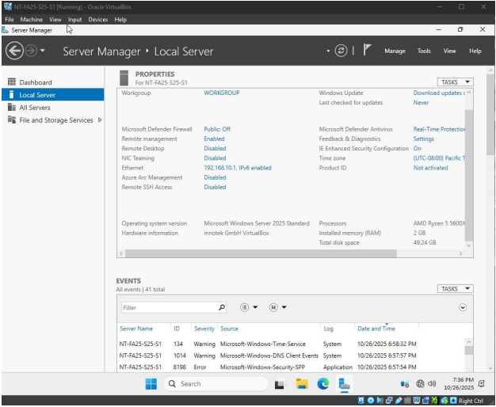
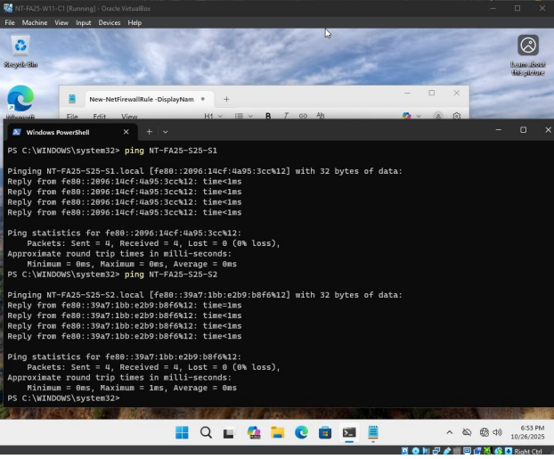

Project Description
Completed as part of system administration coursework, this project involved configuring multiple virtual machines in Oracle VirtualBox. Different networking modes were used to simulate real-world infrastructure and administrative environments.
Skills Learned
- VirtualBox configuration
- NAT, host-only, and internal networking
- Windows Server administration basics
- System troubleshooting
- Network connectivity testing